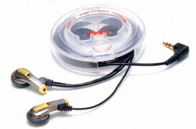
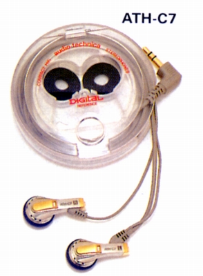
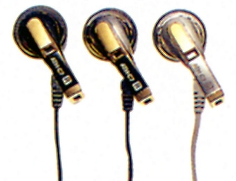

ATH-C7



■価格 4,500円■型式 ダイナミック型イヤホンタイプ■振動板 4ミクロン厚ダブルドーム■インピーダンス 16Ω■再生周波数帯域 20-20,000Hz■許容入力 30mW■感度 105dB/mW■コード 1.2m ステレオ3.5mmL型プラグ■重量 6g（コード含まず）■発売 1988年■販売終了 1990年頃■備考 ブラック、ブラウン及びシルバー仕上げ
テクニカのインデックスへ